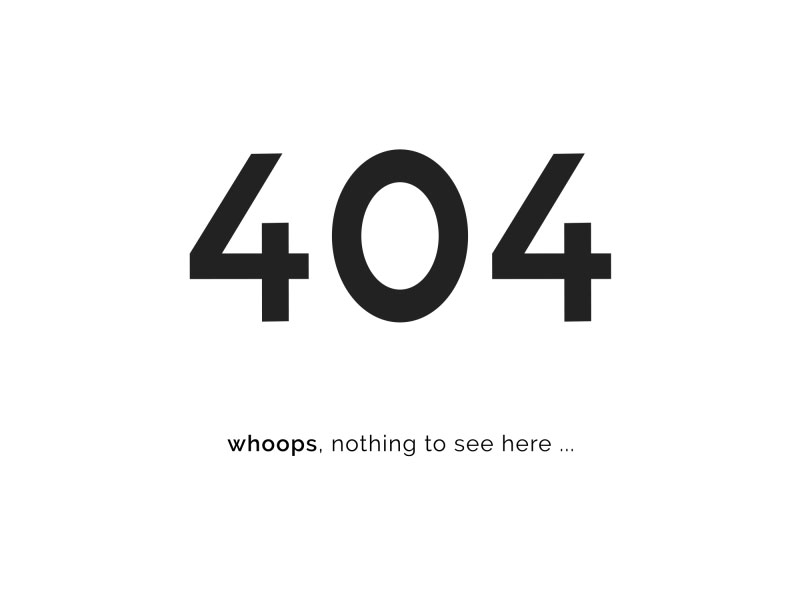

<ion-content [fullscreen]="true">
  <ion-grid class="p404 ion-text-center">
    <ion-title size="large">ERROR</ion-title>
    
    <ion-button (click)="navigateToMenuPrincipal()" fill="outline" size="small">Volver a Inicio</ion-button>
  </ion-grid>
</ion-content>
